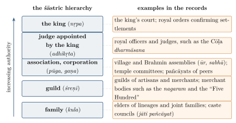

Chapter 16: Custom, Community and Local Justice¶
Most disputes in pre-modern India were never heard by a king or by a learned Brahmin judge. They were settled within families and lineages, by the elders of castes and villages, by guilds and merchant bodies, by temple authorities and by the councils of tribal communities, according to rules that were for the most part unwritten. The Dharmaśāstras acknowledged this: they recognised the customs of regions, castes and families as authoritative, and they listed family, guild and association among the tribunals entitled to decide cases (Chapter 12). This chapter examines custom as a source of law, the evidence of inscriptions for the working of local assemblies, the caste and village councils known as pañcāyats, the matrilineal and tribal systems that departed most sharply from the śāstras, the fate of custom in colonial courts, and the modern constitutional recognition of local self-government.
It is a subject on which romantic and critical views collide. Local institutions are often celebrated as a tradition of “village democracy” and of consensual justice. They were also, in many places, instruments by which dominant castes and senior men controlled others, and B. R. Ambedkar’s denunciation of the village in the Constituent Assembly (Section 16.3.4) expressed the experience of millions. Both aspects must be kept in view (Davis 2010; Galanter 1989).
16.1 Custom in the Dharmaśāstras¶
16.1.1 The Recognition of Custom¶
The authority of custom is acknowledged from the earliest Dharmasūtras. Gautama states that the laws of regions, castes and families are authoritative if they are not contrary to the Veda, and that cultivators, traders, herdsmen, money-lenders and artisans are authorities for their own groups (GDh 11.20–21). Baudhāyana lists customs peculiar to the north and to the south and reports the view that each region should follow its own (BDh 1.2.1–4). Manu tells the king to establish the law of each group after examining “the laws of castes, of regions and of guilds, and the laws of families” (Manu 8.41), and to uphold the agreements of villages and guilds (8.219–221). The Arthaśāstra ranks custom (caritra) among the four bases of a lawsuit, below only royal edict (Chapter 12), and advises the conqueror of new territory to maintain the customs of its people (AŚ 13.5) (Lingat 1973).
The later smṛtis also recognised the bodies through which custom was applied. Nārada lists, in ascending order of authority, the family, the guild, the corporation, the judge appointed by the king and the king himself, each competent within its own sphere and each subject to review by the next; Yājñavalkya gives the first four (Nārada 1.7; Yājñ 2.30; Chapter 12). Figure 16.1 sets this hierarchy beside the institutions that the inscriptions and records discussed in this chapter show at work.

16.1.2 Limits¶
The texts also limit custom. In the theory of the sources of dharma, practice (ācāra) is authoritative only if it is the practice of the “good” or “cultured” (śiṣṭa), defined as learned Brahmins, and only if it does not contradict the Veda or the smṛtis (Chapter 9). Mīmāṃsā authors argued that a custom was valid because it implied a lost Vedic text, so that a custom with a visible worldly motive, such as greed, could not be authoritative. Medieval writers sometimes condemned southern practices, such as marriage with a maternal uncle’s daughter, which southern authors defended. The tension between the universal claims of the śāstras and the authority of local practice was never resolved in theory; in practice, custom governed most of life.
16.1.3 Custom as the Living Law¶
Modern scholars have argued that custom, rather than the smṛtis, was the real law of most Indians. Robert Lingat described the relationship between śāstra and custom as one in which the śāstra provided the general framework and the prestige of tradition, while custom determined most concrete rules (Lingat 1973). Donald Davis, studying medieval Kerala and other regions, has shown how temple authorities, merchant groups, caste assemblies and local rulers produced and applied rules that drew on Dharmaśāstric concepts — dharma, samaya, maryādā — while answering to local interests and customs (Davis 2004); he describes Dharmaśāstra as the jurisprudence that made sense of this world of corporate law-making (Davis 2010).
16.2 Assemblies in the Inscriptions¶
16.2.1 The Evidence¶
Inscriptions on stone and copper plates are the most important evidence for local institutions in early and medieval India. Land grants record the transfer of villages and fields, often to Brahmins or temples, and specify the rights transferred and the officials to be informed. Temple inscriptions record endowments, the duties of temple servants and the decisions of temple assemblies. Records of village assemblies, especially in the Tamil region, describe their composition and procedures.
16.2.2 The Cōḷa Assemblies and Uttaramerūr¶
The richest evidence comes from the Tamil country under the Pallava and Cōḷa kings, from the ninth to the thirteenth century. Two kinds of local assembly appear: the ūr, the assembly of ordinary villages of landholders, and the sabhā, the assembly of a brahmadeya, a village granted to Brahmins. Merchant towns had their own bodies (nagaram). These assemblies managed common lands and tanks, collected and remitted revenue, administered endowments, and settled disputes; they worked through committees (vāriyam) for particular tasks — tanks, gardens, justice, the annual supervision of affairs (Nilakanta Sastri 1955).
The best-known records are two inscriptions of the reign of Parāntaka I, dated 919 and 921 CE, from Uttaramerūr (near Kanchipuram), a large brahmadeya village. They record the rules adopted by the village sabhā for choosing the members of its committees. The village was divided into thirty wards. To be eligible, a man had to own a specified amount of tax-paying land and a house on his own site, to be between thirty-five and seventy years old, and to know Vedic texts and their exposition; men who had served on a committee in the previous three years, who had failed to render accounts, or who had committed certain sins, and their relatives, were excluded. The names of eligible men in each ward were written on palm-leaf tickets and placed in a pot, from which a young boy drew one ticket — a procedure called kuṭavōlai (“pot-ticket”). Those chosen served for a year on the various committees.
The committees named in the inscriptions included an annual committee, which supervised the general affairs of the village; a garden committee; a tank committee, responsible for the maintenance of the irrigation tank on which the village’s agriculture depended; and a committee for the examination of gold, which certified the purity of the gold used in transactions. Members who were found guilty of misconduct were to be removed, and the rules of eligibility were to apply to future selections.
These inscriptions are a remarkable record of institutional design, with rules on eligibility, rotation, accountability and selection by lot. They have often been described as “democracy” and even as “democracy before the Greeks”. Both descriptions are misleading. Uttaramerūr’s sabhā was an assembly of Brahmin landholders in a village granted to Brahmins; the rules excluded the non-Brahmin cultivators, labourers and artisans who made up most of the village’s inhabitants, and all women; and they date from the tenth century CE, more than a thousand years after Athenian democracy. The lot was used in Athens too, for similar reasons. The Uttaramerūr rules are best understood as the self-government of a privileged corporate body, and as evidence of the sophistication of local institutions under the Cōḷas.
16.2.3 Other Corporate Bodies¶
Inscriptions from many regions record guilds of artisans and merchants, associations of temple servants, Brahmin assemblies (mahājana), and caste bodies making rules for their members, receiving endowments and settling disputes. In western India, merchant associations called mahājan regulated trade and administered charities into the modern period (Chapter 8). Such bodies were the institutional basis of what Davis calls the “jurisprudence of corporate groups” that Dharmaśāstra presupposed (Davis 2010).
16.2.4 Temples as Legal Institutions¶
From the early medieval period, large temples were among the most important legal institutions of India, especially in the south. They owned land and villages, received endowments of money, cattle and gold, employed priests, cooks, musicians, dancers, accountants and guards, and lent money at interest. Their affairs were managed by committees of Brahmins, local assemblies or royal officers, and their inscriptions record rules for the conduct of rituals, the duties of servants, the investment of endowments and the punishment of those who embezzled temple property. Donald Davis has argued that temples, like guilds and castes, were corporate bodies that made and applied their own law within the framework of Dharmaśāstra (Davis 2010).
Under colonial rule, temples and their endowments became the subject of a large body of litigation and legislation. The courts recognised the deity installed in a temple as a juristic person capable of owning property — a position affirmed by the Privy Council in 1925 — with a human manager (śebait, dharmakartā) acting on its behalf; and provincial legislatures, beginning with Madras in the 1920s, created state boards to supervise the administration of Hindu religious endowments. These arrangements continue, in modified form, in independent India (Chapter 20).
16.3 Pañcāyats¶
16.3.1 The Word and the Institution¶
Pañcāyat derives from pañca, “five”, and refers to a council of (in principle) five persons — the “five” (pañc) who decide a dispute or a community’s affairs. The proverb that “God speaks through the five” (pañc parameśvar) expresses the authority attributed to such bodies. In practice, the number varied, and the term covers a wide range of institutions: councils of village elders; councils of caste (jāti) elders with authority over all members of the caste in a region; ad hoc arbitration panels chosen by disputing parties; and, from the late nineteenth century, statutory village councils created by colonial and later by Indian governments.
16.3.2 Village Councils¶
Village elders, often drawn from the dominant landholding caste, settled disputes over boundaries, water, debts, family property and minor offences, and represented the village before revenue officials. Their methods were usually conciliatory: they aimed at a settlement acceptable to the parties and to the community rather than a judgment on rights, and they relied on social pressure rather than force. Ethnographers and historians have described these processes in many regions, and have also emphasised that the elders’ authority reflected local structures of power: those without land, and especially the lowest castes, had little voice and often bore the costs of “harmony” (Galanter 1989).
16.3.3 Caste Councils¶
Caste councils (jāti pañcāyat) regulated the internal affairs of castes: marriage, divorce and remarriage, commensality, occupational rules, ritual observance and the punishment of breaches of caste norms. Their strongest sanction was outcasting (bahiṣkāra, “excommunication”), the exclusion of an offender and sometimes his family from eating, drinking and marrying with other members of the caste — a penalty that could be socially fatal. They could also impose fines, require feasts for the caste, and prescribe penances. Many castes, especially among cultivators, artisans and lower-status groups, allowed divorce and widow remarriage by the decision of their councils, in departure from the Dharmaśāstras.
Caste councils have a dark side, which has been widely documented. They enforced caste boundaries, punished intercaste relationships and resisted the claims of lower castes to equal treatment. In parts of northern India, clan-based councils known as khap pañcāyats have in recent decades issued decrees against marriages within the same clan or village or across caste lines, and some such marriages have ended in so-called “honour killings”. In Shakti Vahini v. Union of India (2018), the Supreme Court held that the interference of such assemblies with the marriages of consenting adults is illegal and laid down preventive and remedial measures.
16.3.4 Gandhi and Ambedkar¶
The village pañcāyat became a central symbol in twentieth-century political thought. M. K. Gandhi, in Hind Swaraj (1909) and many later writings, idealised the self-governing village as the basis of a decentralised, non-violent polity — grām svarāj, village self-rule — in which the pañcāyat would administer justice and the economy would rest on agriculture and village industry. His village was not the village as it was; he insisted that untouchability must be abolished and the village reformed (Gandhi 1909).
B. R. Ambedkar rejected this ideal. Introducing the Draft Constitution in the Constituent Assembly on 4 November 1948, he said: “What is the village but a sink of localism, a den of ignorance, narrow-mindedness and communalism? I am glad that the Draft Constitution has discarded the village and adopted the individual as its unit.” For Ambedkar, the village was where caste was most oppressive and where Dalits were most vulnerable; to give it power was to give power to those who dominated it (Constituent Assembly of India 1948). The Constitution as adopted in 1949 compromised: Article 40, among the non-justiciable Directive Principles, directed the state to organise village pañcāyats, but the basic unit of the Constitution was the individual citizen with enforceable rights.
16.3.5 Caste Disputes and the Right- and Left-Hand Divisions¶
Inscriptions and later records show that disputes between castes over status and privileges were a recurrent feature of social life, and that kings and local assemblies were called upon to settle them. In the Tamil country, from about the eleventh century, many castes were grouped into two broad divisions, the “right-hand” (valaṅkai) and “left-hand” (iṭaṅkai) castes, which competed for ritual and social privileges — the right to ride in palanquins, to use certain musical instruments at weddings, to take particular routes in processions. Such disputes were still being brought before the East India Company’s officers in Madras in the eighteenth and nineteenth centuries. They show caste not as a fixed order derived from the śāstras but as a field of continual negotiation, conflict and adjudication, in which local and royal authorities decided claims according to custom and power.
16.3.6 Pañcāyats in the Maratha State¶
The records of the Maratha state under the Peśvās in the eighteenth century provide some of the best evidence for how pañcāyats worked in practice. Civil disputes — over land, debts, inheritance, caste rights and village offices — were commonly referred by government officers to a pañcāyat of the parties’ peers, chosen with their consent; its decision was recorded and enforced by the state. Criminal matters, by contrast, were dealt with by government officials. British administrators in the Deccan after 1818, notably Mountstuart Elphinstone, at first sought to preserve the pañcāyat system, before replacing it with courts on the Company’s model.
16.4 Matriliny in Kerala¶
The most striking departure from the patrilineal norms of the Dharmaśāstras was the matrilineal system of Kerala and the adjoining Tulu country. Among the Nāyars and several other communities — including some Īḻava groups and the Muslim Māppiḷas of north Malabar, and, in Tulu Nadu, the Bunts under the related aḷiyasantāna system — descent and property passed through women. The basic unit was the taravāṭ, a matrilineal joint family consisting of a woman, her children, her daughters’ children and her brothers, holding property in common under the management of the senior male member (kāraṇavan). A man’s heirs were his sisters’ children, not his own. Marriage took the form of sambandham, a union in which the husband visited the wife in her taravāṭ and had no rights over her property or children. The Nambūtiri Brahmins, by contrast, were patrilineal, and among them only the eldest son married within the caste; younger sons formed sambandham unions with Nāyar women (Arunima 2003).
The Dharmaśāstras had no place for such a system, and British courts at first struggled with it; but they eventually recognised marumakkattāyam as valid custom. From the late nineteenth century, under pressure from reformers within the communities, from economic change and from colonial notions of the “natural” family, the system was transformed by legislation. Laws in Malabar, Travancore and Cochin recognised sambandham as marriage, gave husbands and fathers rights and obligations, and permitted the partition of taravāṭs; the Kerala Joint Hindu Family System (Abolition) Act of 1975 finally abolished the joint family system. G. Arunima’s study shows how this transformation, often presented as modernisation, also reduced the independent property rights and social standing of Nāyar women (Arunima 2003).
16.5 Tribal Customary Law¶
India’s Scheduled Tribes — several hundred communities with their own languages, religions and social organisation — have their own customary laws, transmitted orally and administered by their own institutions. Among the Santals of eastern India, for example, the village headman (mãjhi) and the council of a group of villages under a paragana settle disputes and enforce customary rules on marriage, inheritance and land; the Santal rebellion (hul) of 1855–56 was directed in part against the moneylenders, traders and courts that undermined their institutions. The Khasi of Meghalaya are matrilineal, with ancestral property passing to the youngest daughter, and their villages and clusters of villages are governed by councils (dorbar). The Adi of Arunachal Pradesh hold village assemblies (kebang) that decide disputes and community affairs. Naga villages are governed by councils of elders according to customary law.
Colonial rule often undermined these institutions. The extension of revenue settlements, forest laws and courts into tribal areas exposed communities to moneylenders, traders and landholders from outside, and to the loss of land through debt and litigation. Rebellions such as the Santal hul and the movement led by Birsa Munda among the Mundas of Chotanagpur in the 1890s were in part responses to this process. The colonial state eventually enacted protective tenancy laws, such as the Chotanagpur Tenancy Act of 1908, which restricted the transfer of tribal land, and recognised customary institutions such as the Munda and Oraon village headmen; independent India extended such protections.
These systems should not be described as variants of Dharmaśāstra, nor romanticised as uniformly egalitarian; like other customary systems, they distribute rights by gender, age and lineage. They are, however, distinct legal traditions with their own principles. The colonial state recognised some of them, for instance by excluding certain hill areas from the ordinary courts, and the Constitution protects them in several ways: the Fifth Schedule provides for the administration of Scheduled Areas in central India, the Sixth Schedule creates autonomous district councils with powers over customary law in parts of the north-east, and Article 371A provides that no Act of Parliament on Naga religious or social practices, customary law and procedure or ownership of land shall apply to Nagaland unless the state’s legislative assembly so decides. The Panchayats (Extension to the Scheduled Areas) Act of 1996 (PESA) requires state laws on pañcāyats in Scheduled Areas to respect customary law and the traditional management of community resources.
16.6 Custom in the Colonial Courts¶
The colonial courts, required to apply “Hindu law” and “Muhammadan law” in matters of succession, marriage and religious usage (Chapter 19), had to decide what weight to give to custom. In a famous judgment of 1868 (Collector of Madura v. Moottoo Ramalinga Sathupathy), the Privy Council declared that “under the Hindu system of law, clear proof of usage will outweigh the written text of the law”. The courts developed tests for a valid custom: it must be ancient, certain, reasonable, continuous and not opposed to public policy — tests drawn from English law on local customs. In practice, proving a custom was difficult and expensive, and the courts’ preference for written authority tended to favour the textual law of the śāstras as interpreted by Brahmin experts, so that many lower-caste groups were drawn towards Brahmanical norms. Scholars such as Bernard Cohn and Marc Galanter have described this process as the “Brahmanisation” or “textualisation” of Hindu law (Cohn 1996; Galanter 1989).
The Punjab took a different path. The Punjab Laws Act of 1872 directed the courts to apply custom, rather than Hindu or Islamic law, in matters of succession, marriage and other personal relations for the agricultural tribes of the province. Officers compiled records of customary law (riwāj-i-ām) during land settlements, and W. H. Rattigan’s Digest of Civil Law for the Punjab (1880) systematised them. The result was a body of “customary law” that was in part created by the colonial state, and that often limited the rights of women to inherit land in order to keep land within male lineages.
16.7 Local Self-Government in the Constitution¶
After independence, community development programmes and the recommendations of the Balwantrai Mehta Committee (1957) led many states to create elected pañcāyat institutions, with uneven results. The Constitution (Seventy-third Amendment) Act of 1992, which came into force in April 1993, gave these bodies constitutional status. It inserted Part IX into the Constitution, providing for a three-tier system of elected pañcāyats at the village, intermediate and district levels; for the gram sabhā, the assembly of all voters in a village, as the base of the system (Article 243A); for regular elections under state election commissions; and for the reservation of seats for Scheduled Castes and Scheduled Tribes in proportion to their population and of not less than one-third of seats and chairpersonships for women (Article 243D). Many states have since raised the reservation for women to one-half. The Seventy-fourth Amendment did the same for urban local bodies.
The reservation of seats for women has brought very large numbers of women into elected local office. Research has found that it can change the priorities of local government: a study of village councils in West Bengal and Rajasthan by Raghabendra Chattopadhyay and Esther Duflo found that councils headed by women invested more in the public goods that women in those villages had identified as priorities (Chattopadhyay and Duflo 2004). Other studies have described the obstacles women face, including the exercise of power by male relatives in their name. Statutory pañcāyats, unlike the councils of the past, have no general judicial powers; disputes are handled by the courts, by the lok adālats established under the Legal Services Authorities Act of 1987 to encourage settlement, and by the village courts provided for by the Gram Nyayalayas Act of 2008.
16.8 Legal Pluralism in Modern India¶
Scholars of modern Indian law have described its many coexisting normative orders — state law, religious personal laws, caste and community rules, tribal customary law and the informal settlement of disputes — as a case of legal pluralism. Marc Galanter argued that the colonial and post-colonial state gradually displaced the “indigenous” legal orders of caste and village while also preserving them in modified forms, and that ordinary Indians moved between official and unofficial forums according to their interests and resources (Galanter 1989). Others have emphasised the way in which state law itself creates and shapes “custom” by recognising some practices and not others. The classical recognition of the customs of regions, castes and families is sometimes invoked in these debates as an Indian precedent for pluralism. The precedent is a limited one: the classical pluralism was organised by hierarchy, while modern pluralism must answer to the Constitution’s guarantee of equal rights to every individual, including those whom communities and customs disadvantage.
16.9 Assessment¶
The history of custom and local justice in India shows a legal world far more varied than the Dharmaśāstras alone suggest. Corporate bodies of many kinds made and applied their own rules; matrilineal and tribal systems followed principles of their own; and the śāstras themselves, with their recognition of custom, acknowledged this plurality. The same history shows how local institutions could entrench the power of dominant castes and senior men, and how colonial courts and legislatures transformed custom even as they claimed to preserve it. The modern constitutional settlement — individual rights enforceable against communities, combined with elected local government and protection for tribal customary law — reflects the arguments of both Gandhi and Ambedkar, and the tension between them remains unresolved.
16.10 Summary¶
-
The Dharmaśāstras recognised the customs of regions, castes, families and guilds as authoritative within limits; in practice custom governed most of life.
-
Inscriptions show village and Brahmin assemblies, guilds, merchant bodies and temple authorities making and applying rules; the Uttaramerūr inscriptions (919, 921) record the selection by lot of committees of a Brahmin village assembly — an example of corporate self-government, not of democracy.
-
Caste and village councils (pañcāyats) settled disputes and enforced caste norms, including by outcasting; their coercive side persists in contemporary caste and clan councils.
-
Matrilineal systems in Kerala and the customary laws of tribal communities departed sharply from the śāstras; colonial and post-colonial law first recognised and then transformed them, while the Constitution protects tribal customary law in specified areas.
-
Gandhi idealised the self-governing village; Ambedkar denounced it as a den of caste oppression. The Seventy-third Amendment (1992) gave elected pañcāyats constitutional status, with reservations for Scheduled Castes, Scheduled Tribes and women.
Further Reading¶
On custom in the Dharmaśāstras, see Lingat (1973) and Davis (2010), and on medieval Kerala Davis (2004); on the Cōḷa assemblies, Nilakanta Sastri (1955). Arunima (2003) studies the transformation of Kerala matriliny; Galanter (1989) and Cohn (1996) the colonial treatment of custom. Chattopadhyay and Duflo (2004) is an influential study of women’s reservation in pañcāyats.